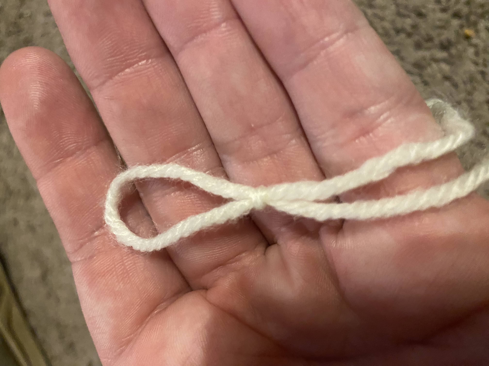
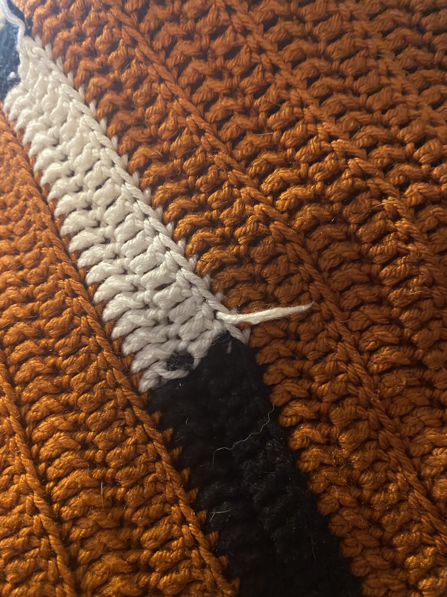

Welcome!
I hope you find this website helpful in learning more about the specific yarn work, namely crocheting and knitting.
Crocheting
Crocheting, or crochet, is a french derivative word that means "to knot" in which yarn is "woven" through loops creating loose knots that form fabric that has a rigid structure.
Knitting
Knitting is an english practice of weaving yarn or threads through loops creating a more free flowing fabric.
| Crocheting | Knitting |
|---|---|
| Fabric is rigid. | Fabric is loose and flowing. |
| Loops if tighted with form knots. | Loops if tighted with fall apart. |
Can be used to make a variety of things.
|
Has limited uses due to fabirc cannot stand up by itself without support. |

Making a Slipknot
Yarn Crafting

Crochet Tools

Knitting Tools
The Tools

Yarn Weight
Getting Started in Crochet
Getting Started in Knitting
